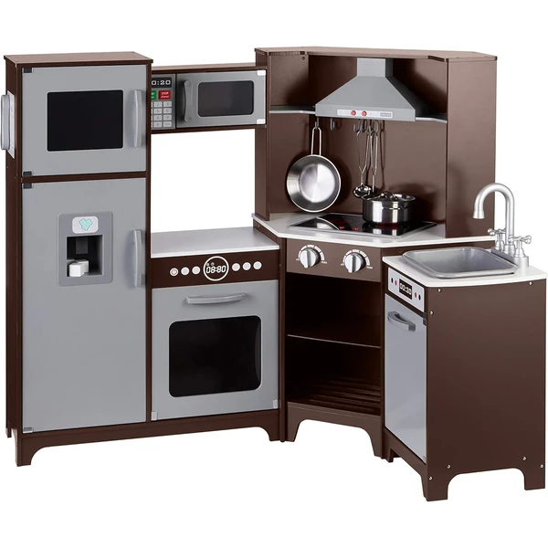
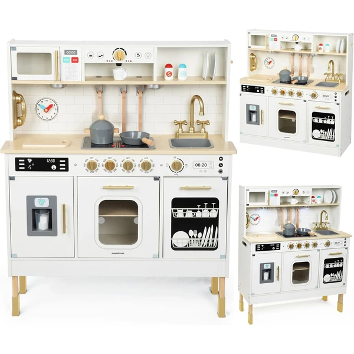
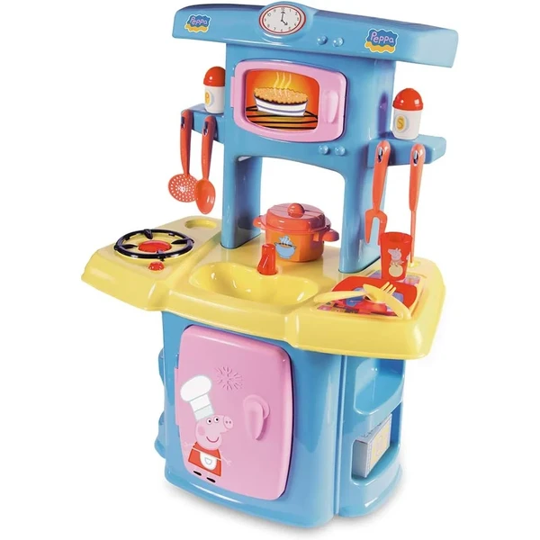
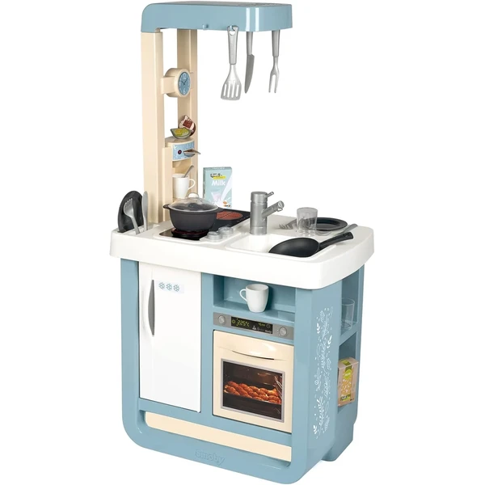
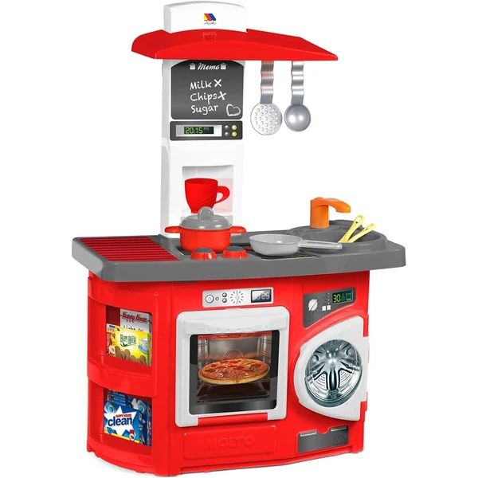
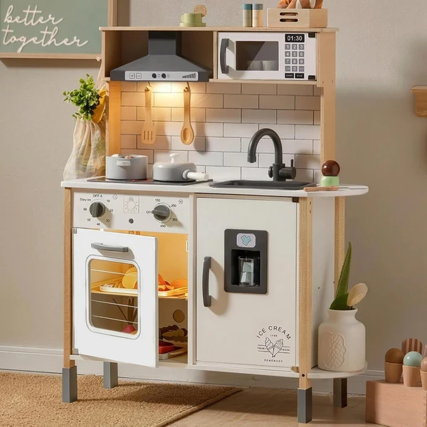

Amazon Basics Cocina Esquinada
Una cocina de madera con forma de esquina, certificada FSC, con puertas que se abren y pomos que giran y hacen clic. Incluye luces, sonidos realistas y una pizarra en la nevera para anotar la compra imaginaria.
⭐ ¿Por qué nos gusta?
- ✔ Certificada FSC, madera de origen responsable.
- ✔ Puertas y pomos interactivos con luces y sonido.
- ✔ Diseño en esquina, aprovecha bien el espacio.
💬 Lo que más destacan las familias
Muchos padres coinciden en que el diseño esquinero encaja muy bien en habitaciones pequeñas sin perder tamaño de juego. Los detalles interactivos, como los pomos que hacen clic, se valoran especialmente por lo realista que resulta.
Ver en Amazon

Mamabrum Cocina de Madera con Luces LED
Una cocina de madera con altura ajustable en dos niveles para que crezca con el niño, y espacio suficiente para que jueguen varios niños a la vez. Incluye placa de inducción y máquina de hielo interactivas con luces LED.
⭐ ¿Por qué nos gusta?
- ✔ Altura ajustable en dos niveles.
- ✔ Espacio para que jueguen varios niños a la vez.
- ✔ Placa y máquina de hielo interactivas con luces LED.
💬 Lo que más destacan las familias
Entre los comentarios más habituales aparece lo práctico que resulta poder ajustar la altura según va creciendo el niño. También se valora que quepan varios niños jugando a la vez sin agobios.
Ver en Amazon

Smoby Peppa Pig Mi Cocina
Una cocina de juguete con la temática de Peppa Pig, totalmente equipada con fregadero, nevera, horno y quemador. Incluye 13 accesorios para preparar recetas imaginarias desde el primer día.
⭐ ¿Por qué nos gusta?
- ✔ Temática Peppa Pig, muy reconocible para los peques.
- ✔ Totalmente equipada: fregadero, nevera y horno.
- ✔ Incluye 13 accesorios para cocinar.
💬 Lo que más destacan las familias
Lo que más suele gustar es lo bien recibida que resulta entre fans de Peppa Pig, que reconocen enseguida el diseño. El equipamiento completo también se valora porque no faltan accesorios básicos para empezar a jugar.
Ver en Amazon

Smoby Bon Appetit
Una cocina de juguete con diseño realista, fregadero con grifo, horno con puerta abatible y cafetera con cápsulas. Incluye 23 accesorios y efectos sonoros que simulan estar cocinando de verdad.
⭐ ¿Por qué nos gusta?
- ✔ 23 accesorios incluidos para cocinar.
- ✔ Efectos sonoros que simulan cocinar de verdad.
- ✔ Diseño realista con cafetera y fregadero con grifo.
💬 Lo que más destacan las familias
Se repite bastante el comentario de que los efectos sonoros hacen que el juego se sienta mucho más real. La cantidad de accesorios incluidos también se valora frente a otros modelos más básicos.
Ver en Amazon

Cocina Infantil Molto Kitchen Roja
Una cocina de juguete completa con horno, campana extractora, microondas y lavadora, además de un set de 12 accesorios. Pensada para preparar comidas imaginarias de principio a fin, incluido fregar y recoger.
⭐ ¿Por qué nos gusta?
- ✔ Incluye microondas y lavadora, además de cocina.
- ✔ Set de 12 accesorios para jugar completo.
- ✔ Fabricada por una marca con 60 años de experiencia.
💬 Lo que más destacan las familias
Una característica muy mencionada es lo completa que resulta al incluir también lavadora y microondas, no solo la cocina básica. Los padres valoran que la marca lleve décadas fabricando juguetes de este tipo.
Ver en Amazon

Tiny Land Cocina de Madera
Una cocina de madera con 18 accesorios, luces y sonidos reales que simulan freír o hervir sin generar calor. Se puede configurar en 3 alturas distintas para que acompañe al niño según va creciendo.
⭐ ¿Por qué nos gusta?
- ✔ 18 accesorios incluidos, muy completa.
- ✔ Luces y sonidos reales sin generar calor.
- ✔ Configurable en 3 alturas distintas.
💬 Lo que más destacan las familias
Muchos padres destacan que los sonidos de freír o hervir hacen que el juego resulte mucho más inmersivo. La posibilidad de ajustar la altura en varios niveles también se valora para que dure varias temporadas.
Ver en Amazon

Smoby Cocina Nova
Una cocina compacta con placa, horno, fregadero y una pequeña zona de comedor, con 13 accesorios incluidos como platos, vasos y un molinillo de sal y pimienta con sonido. Diseño de colores actuales que encaja en cualquier habitación.
⭐ ¿Por qué nos gusta?
- ✔ Diseño compacto, ideal para espacios reducidos.
- ✔ Incluye 13 accesorios, entre ellos vajilla completa.
- ✔ Molinillo de sal y pimienta con sonido realista.
💬 Lo que más destacan las familias
Entre los comentarios más habituales aparece lo bien que encaja el diseño de colores actuales en cualquier habitación. El tamaño compacto también se valora para quienes no disponen de mucho espacio.
Ver en Amazon